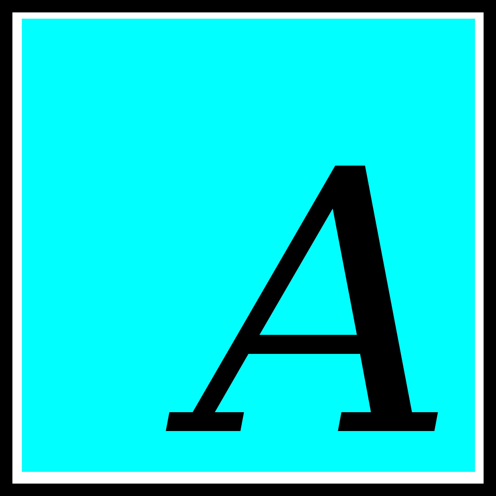

In September 2025, I finished writing the AneoC compiler for x86-64 Linux, I wanted a way to run my compiler exclusively on an operating system. I though of a name for my compiler, 'AneoC', because me and some other people had agreed on r/C_Programming that anything with 'neo' in it's name automaticaly sounded cool, thus the name for the operating system would then be called 'AneoEngine', since the initial purpose of the operating system would be to run my compiler isolated from all modern operating systems. In October 2025, I sort of started the idea of AneoEngine. I thought of putting my compiler on a Debian based system, but not just Debian, a fully stripped down version of Debian with all of its core tools being written in my compiler. In November 2025, I got tired of building my OS off of a Linux based system and I thought to my self, this isn't a custom OS, it's just Debian but hard mode. I also thought building an OS completely from scratch would be hard, but it would be better for me and I could improve my programming, logic, and understanding of how computers worked. From November 2025 to Feburary 2025, I would learn Intel x86 Assembly. In December 2025, I would write a 102 line kernel that would be the basis of AneoEngine. In Feburary 2026, I finished learning hardware level x86 Assembly, and at that point, I finished writing a boot loader (AEBoot), Kernel, and a shell. I took a break from the end of Feburary 2026 to mid May 2026. I spent my time learning more x86 Assembly and standalone hardware-level C. AneoEngine currently sits at 600+ lines of code.